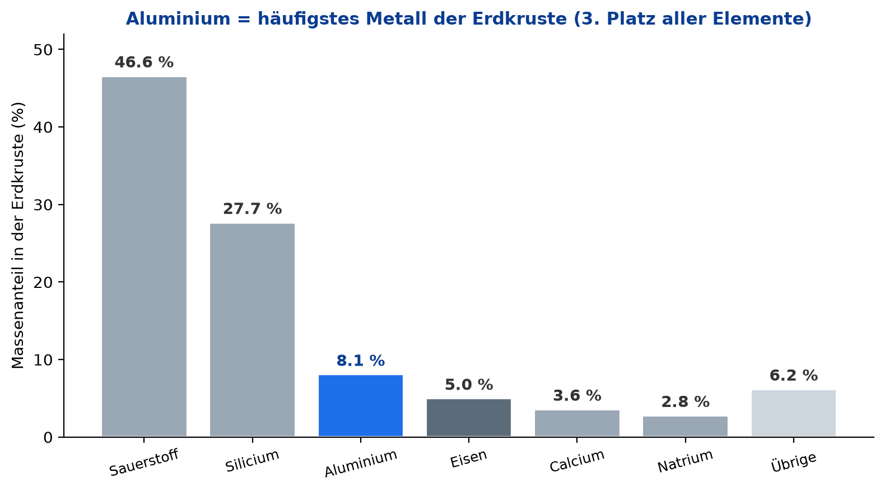
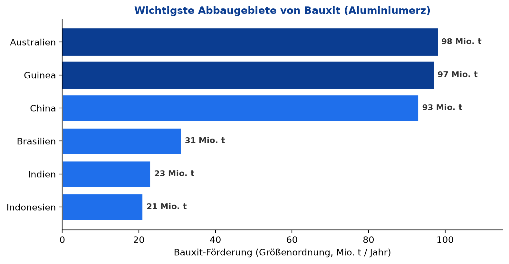
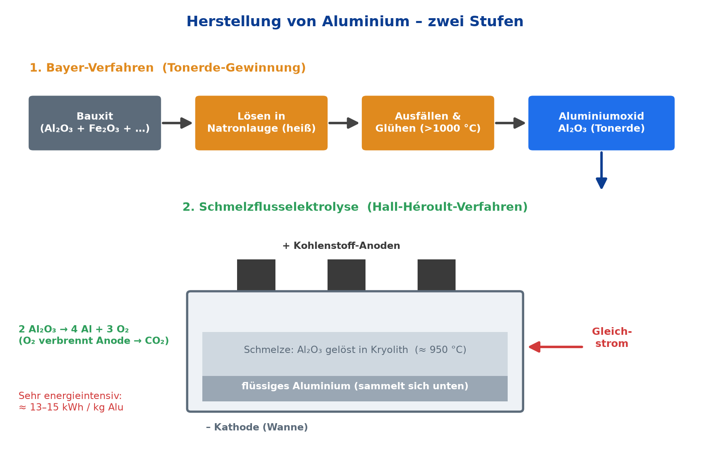
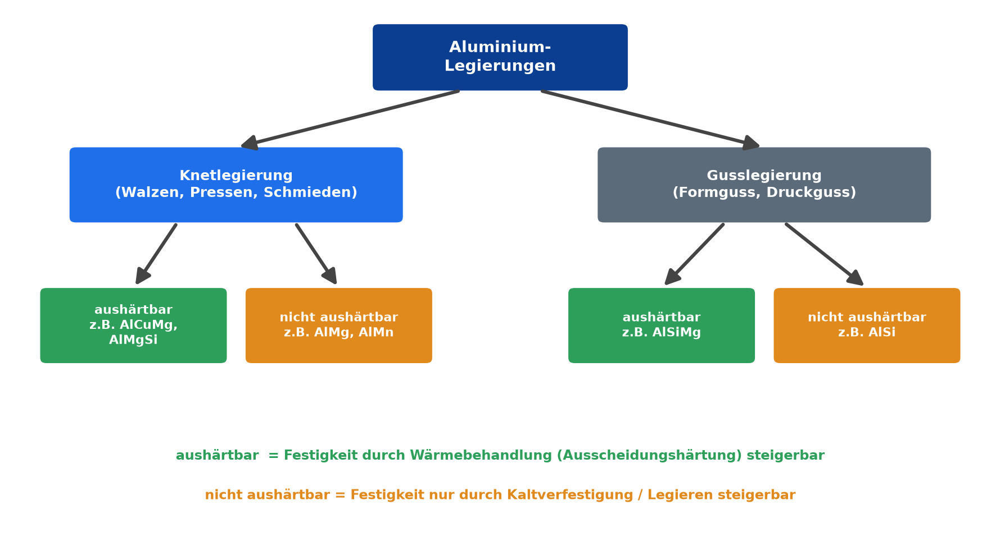
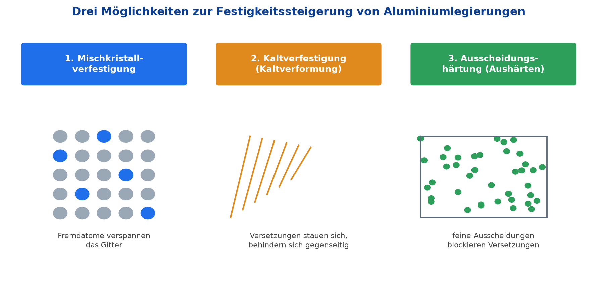

Ausgangslage
In unserer Firma wird der abgebildete Mercedes-Benz 2440 L aufgebaut. Bei den verwendeten Werkstoffen kam es zu Diskussionen – dieses Handout fasst das Wichtigste über Aluminium zusammen, damit alle Kolleginnen und Kollegen auf demselben Stand sind.
Aluminium ist im Fahrzeugbau längst Alltag: Überall dort, wo Gewicht eingespart werden soll, ohne dass die Korrosionsbeständigkeit leidet, ist es die erste Wahl. Die folgenden Abschnitte gehen der Reihe nach auf Herkunft, Herstellung, Legierungen und Einsatz ein.
Vorkommen und Abbaugebiete
Aluminium ist mit einem Massenanteil von rund 8 % das häufigste Metall der Erdkruste und steht hinter Sauerstoff und Silicium an dritter Stelle aller Elemente. Trotzdem findet man es nie als reines Metall: Es ist so reaktionsfreudig, dass es immer chemisch gebunden in Mineralien vorliegt.

Das wirtschaftlich wichtigste Erz ist Bauxit. Es enthält etwa 50–60 % Aluminiumoxid (Al2O3), daneben Eisen- und Siliciumoxide. Bauxit liegt häufig oberflächennah und wird deshalb meist im offenen Tagebau gewonnen. Die großen Lagerstätten liegen in tropischen und subtropischen Regionen.

Vor- und Nachteile des Werkstoffs
Ob Aluminium die richtige Wahl ist, hängt vom Bauteil ab. Die folgende Gegenüberstellung zeigt, warum es sich im Leichtbau durchgesetzt hat – und wo seine Grenzen liegen.
Vorteile
- Geringe Dichte (2,7 g/cm³) – nur etwa ein Drittel von Stahl.
- Korrosionsbeständig durch die dichte, selbstheilende Oxidschicht.
- Gut umformbar – walzen, pressen, tiefziehen, strangpressen.
- Sehr gut leitfähig für Wärme und elektrischen Strom.
- Unmagnetisch und lebensmittelecht.
- Hervorragend recycelbar – nur rund 5 % der Primärenergie nötig.
Nachteile
- Geringere Festigkeit als Stahl; auch der E-Modul beträgt nur ein Drittel.
- Hoher Energiebedarf bei der Primärgewinnung (Elektrolyse).
- Teurer als einfacher Baustahl.
- Anspruchsvoller zu schweißen – Oxidschicht und hohe Wärmeleitung.
- Geringe Warmfestigkeit – verliert bei Hitze schnell an Festigkeit.
- Keine echte Dauerfestigkeitsgrenze bei schwingender Belastung.
Herstellung – vom Bauxit zum Aluminium
Reines Aluminium wird in zwei Stufen gewonnen. Zuerst wird aus dem Erz die reine Tonerde herausgelöst, anschließend wird daraus durch Elektrolyse das Metall abgeschieden.
1. Bayer-Verfahren – Tonerde gewinnen
Das gemahlene Bauxit wird in heißer Natronlauge gelöst. Dabei geht das Aluminiumoxid in Lösung, während die unlöslichen Bestandteile (vor allem Eisenoxid, der „Rotschlamm") abgetrennt werden. Aus der Lösung fällt man Aluminiumhydroxid aus und glüht es bei über 1000 °C zu reiner Tonerde (Al2O3).
2. Schmelzflusselektrolyse (Hall-Héroult-Verfahren)
Die Tonerde wird in geschmolzenem Kryolith bei etwa 950 °C gelöst – das senkt den Schmelzpunkt deutlich. Ein starker Gleichstrom zerlegt das Oxid: Das flüssige Aluminium sammelt sich am Boden der Wanne (Kathode), der freigesetzte Sauerstoff verbrennt die Kohlenstoff-Anoden zu CO2.

Aluminiumlegierungen
Reines Aluminium ist für tragende Bauteile zu weich. Durch Legieren – also das gezielte Zugeben anderer Elemente wie Magnesium, Silicium, Kupfer oder Mangan – lassen sich die Eigenschaften an den jeweiligen Einsatz anpassen. Man unterscheidet die Legierungen nach zwei Gesichtspunkten.

Aushärtbar oder nicht aushärtbar?
Bei aushärtbaren Legierungen (z. B. AlCuMg, AlMgSi) lässt sich die Festigkeit durch eine Wärmebehandlung – die Ausscheidungshärtung – deutlich steigern. Nicht aushärtbare Legierungen (z. B. AlMg, AlMn) reagieren darauf nicht; ihre Festigkeit erhöht man nur durch Kaltverfestigung oder durch das Legieren selbst.
Knetlegierung gegen Gusslegierung
| Merkmal | Knetlegierung | Gusslegierung |
|---|---|---|
| Verarbeitung | Umformen: walzen, pressen, schmieden, ziehen | Vergießen: Sand-, Kokillen-, Druckguss |
| Legierungsanteil | eher gering → gut verformbar, zäh | hoch, vor allem Silicium → gut gießbar |
| Typische Erzeugnisse | Bleche, Profile, Rohre, Drähte | komplexe Gehäuse und Formteile |
| Beispiele | AlMg3, AlMgSi0,5, AlCuMg (Dural) | AlSi12, AlSi10Mg, G-AlSi |
| Im Nutzfahrzeug | Aufbauten, Bordwände, Planenrahmen | Getriebe- und Motorgehäuse, Halter |
Drei Wege zur höheren Festigkeit
Die Festigkeit einer Aluminiumlegierung beruht darauf, das Abgleiten von Versetzungen im Kristallgitter zu erschweren. Dafür gibt es im Wesentlichen drei Verfahren, die sich auch kombinieren lassen.

1. Mischkristallverfestigung
Fremdatome (z. B. Magnesium oder Mangan) werden in das Gitter eingebaut. Sie verzerren es und behindern so das Abgleiten der Atomebenen.
2. Kaltverfestigung
Beim Kaltumformen – etwa Walzen oder Ziehen – steigt die Versetzungsdichte. Die Versetzungen stauen sich gegenseitig, der Werkstoff wird fester, allerdings auch spröder.
3. Ausscheidungshärtung (Aushärten)
In drei Schritten – Lösungsglühen, Abschrecken, Auslagern – bilden sich feinste Ausscheidungen, die Versetzungen blockieren. Das funktioniert nur bei aushärtbaren Legierungen.
Anwendung im Berufsalltag
Am Mercedes-Benz 2440 L steckt Aluminium an vielen Stellen. Drei typische Bereiche aus unserem Arbeitsalltag:
- Fahrerhaus und Aufbau: Bordwände, Kofferaufbauten und Planenrahmen aus Aluprofilen senken das Leergewicht und erhöhen damit die zulässige Nutzlast.
- Antrieb und Fahrwerk: Motor- und Getriebegehäuse, Ölwannen, Querträger und Felgen werden als Aluminium-Gussteile ausgeführt.
- Tanks und Behälter: Kraftstoff- und Druckluftbehälter, Trittstufen und Unterfahrschutz nutzen die Korrosionsbeständigkeit des Werkstoffs.
Quellen
- Europa-Lehrmittel: Fachkunde Metall. 58. Auflage, Verlag Europa-Lehrmittel, Haan-Gruiten.
- Roloff/Matek: Maschinenelemente – Tabellenbuch. Springer Vieweg.
- Bargel/Schulze: Werkstoffkunde. Springer Verlag.
- DIN EN 573 (Knetwerkstoffe) und DIN EN 1706 (Gussstücke), Beuth Verlag.
- Bundesanstalt für Geowissenschaften und Rohstoffe (BGR) – Rohstoffdaten, bgr.bund.de (abgerufen Juni 2026).
- Aluminium Deutschland e. V., aluminiumdeutschland.de (abgerufen Juni 2026).
- Wikipedia: Artikel „Aluminium", „Bauxit", „Aluminiumherstellung" (abgerufen Juni 2026).
- Mercedes-Benz Trucks – technische Produktinformationen.
Abbildungen 1–5: eigene, schematische Darstellungen. Fahrzeugbezug nach Aufgabenblatt „Aluminium" (Lernfeld 5).